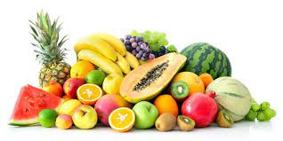
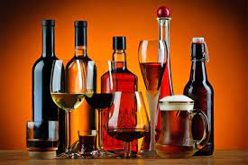
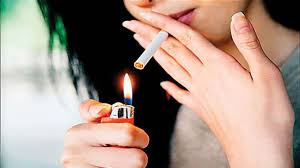

Healthy Tips for a Healthy Life
The start of a new decade brings with it new resolutions to improve one’s life,
including a healthier lifestyle. Here are a few practical health tips to help you start
off towards healthy living in 2021.

Eat a healthy diet
Eat a combination of different foods, including fruit, vegetables, legumes, nuts
and whole grains. Adults should eat at least five portions (400g) of fruit and vegetables
per day. You can improve your intake of fruits and vegetables by always including
veggies in your meal; eating fresh fruit and vegetables as snacks; eating a variety of
fruits and vegetables; and eating them in season. By eating healthy, you will reduce
your risk of malnutrition and noncommunicable
diseases (NCDs) such as diabetes, heart disease, stroke and cancer.
Consume less salt and sugar
Filipinos consume twice the recommended amount of sodium, putting them at risk
of high blood pressure, which in turn increases the risk of heart disease and stroke.
Most people get their sodium through salt. Reduce your salt intake to 5g per day,
equivalent to about one teaspoon. It’s easier to do this by limiting the amount of salt,
soy sauce, fish sauce and other high-sodium condiments when preparing meals;
removing salt, seasonings and condiments from your meal table; avoiding salty snacks;
and choosing low-sodium products.
On the other hand, consuming excessive amounts of sugars increases the risk of tooth
decay and unhealthy weight gain. In both adults and children, the intake of free sugars
should be reduced to less than 10% of total energy intake. This is equivalent to 50g or
about 12 teaspoons for an adult. WHO recommends consuming less than 5% of total
energy intake for additional health benefits. You can reduce your sugar intake by limiting
the consumption of sugary snacks, candies and sugar-sweetened beverages.
Reduce intake of harmful fats
Fats consumed should be less than 30% of your total energy intake.
This will help prevent unhealthy weight gain and NCDs. There are different
types of fats, but unsaturated fats are preferable over saturated fats and trans-fats.
WHO recommends reducing saturated fats to less than 10% of total energy intake;
reducing trans-fats to less than 1% of total energy intake; and replacing both
saturated fats and trans-fats to unsaturated fats.
The preferable unsaturated fats are found in fish, avocado and nuts, and in sunflower,
soybean, canola and olive oils; saturated fats are found in fatty meat, butter, palm and
coconut oil, cream, cheese, ghee and lard; and trans-fats are found in baked and fried
foods, and pre-packaged snacks and foods, such as frozen pizza, cookies, biscuits, and
cooking oils and spreads.
Avoid harmful use of alcohol

There is no safe level for drinking alcohol. Consuming alcohol can lead to health
problems such as mental and behavioural disorders, including alcohol dependence,
major NCDs such as liver cirrhosis, some cancers and heart diseases, as well as injuries
resulting from violence and road clashes and collisions.
The liver is an organ which helps break down and remove harmful substances from
your body, including alcohol. Long-term alcohol use interferes with this process.
It also increases your risk for chronic liver inflammation and liver disease. The scarring
caused by this inflammation is known as cirrhosis. The formation of scar tissue
destroys the liver. As the liver becomes increasingly damaged, it has a harder
time removing toxic substances from your body.
The pancreas helps regulate your body’s insulin use and response to glucose.
When your pancreas and liver aren’t functioning properly, you run the risk of
experiencing low blood sugar, or hypoglycemia.
Do not SMOKE

Smoking tobacco causes NCDs such as lung disease, heart disease and stroke.
Tobacco kills not only the direct smokers but even non-smokers through second-hand
exposure. Currently, there are around 15.9 million Filipino adults who smoke tobacco
but 7 in 10 smokers are interested or plan to quit.
If you are currently a smoker, it’s not too late to quit. Once you do, you will experience
immediate and long-term health benefits. If you are not a smoker, that’s great! Do not
start smoking and fight for your right to breathe tobacco-smoke-free air.
No matter how you smoke it, tobacco is dangerous to your health. There are no safe
substances in any tobacco products, from acetone and tar to nicotine and carbon
monoxide. The substances you inhale don’t just affect your lungs. They can affect
your entire body.Smoking can lead to a variety of ongoing complications in the body,
as well as long-term effects on your body systems. While smoking can increase
your risk of a variety of problems over several years, some of the bodily effects are immediate.